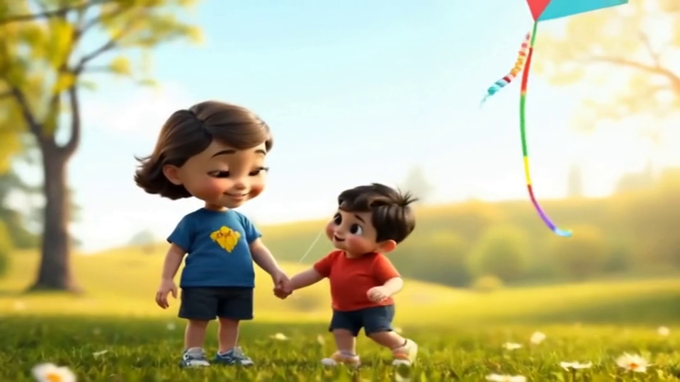

Aden referans önizleme — NEEDS_REVISION / onaysız
Orijinal dosyalar değiştirilmedi. Video karesi yalnız önizleme için çıkarıldı.
 Keyframe (1280×720) · SHA b62eb34a… · yıldız toka ve çiller görünmüyor
Keyframe (1280×720) · SHA b62eb34a… · yıldız toka ve çiller görünmüyor

5 sn test videosundan 2. sn karesi (960×540 önizleme) · Kaan bebeksi orandan uzak